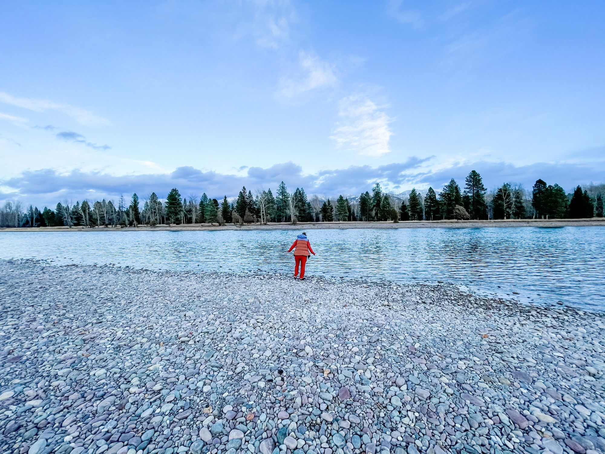

Since I was a little girl, I had the tradition of splashing my face with water anytime we came across a mountain stream or lake.
I'm not sure where this custom came from, my mom, my dad or my own way of appreciating the cool feeling on my skin.
Many of my fondest childhood memories revolve around water, whether it be the lake I grew up on or our annual summer trips to Montana but I always found the feeling of water to be healing.
STOP! I need to wash my face!
I would regularly announce to my husband on many of our mountain drives. Knowing he likely found me silly, I would jump out and splash my face.
During my HG nausea coma, I would often feel the same, but this time more out of necessity.
You know how great cold water feels when you're nauseated? I needed it like I needed breath.
One of the biggest challenges of HG was not being able to swim or get wet due to my PICC line. Knowing water would feel so great, I would watch from the shore, anticipating how great it would feel next year when I would be able to SWIM!
Now 3 weeks post Hyperemesis, on Adventure Part 4, I found myself feeling that nausea begin to creep in. As if I had PTSD, I began panicking, I CAN'T BE NAUSEAS AGAIN!
Again I ask my husband to drive us to the nearest mountain river, in hopes that the wave of sickness would pass.
This time it only took the fresh air hitting my skin for that stomach churning feeling to dissipate, the water hitting my face was simply the icing on the cake.
Water, now not just a necessity but a gift. This, this is my healing.
